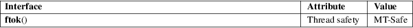

ftok − convert a pathname and a project identifier to a System V IPC key
Standard C library (libc, −lc)
#include <sys/ipc.h>
key_t ftok(const char *pathname, int proj_id);
The ftok() function uses the identity of the file named by the given pathname (which must refer to an existing, accessible file) and the least significant 8 bits of proj_id (which must be nonzero) to generate a key_t type System V IPC key, suitable for use with msgget(2), semget(2), or shmget(2).
The resulting value is the same for all pathnames that name the same file, when the same value of proj_id is used. The value returned should be different when the (simultaneously existing) files or the project IDs differ.
On success, the generated key_t value is returned. On failure −1 is returned, with errno indicating the error as for the stat(2) system call.
For an explanation of the terms used in this section, see attributes(7).

POSIX.1-2008.
POSIX.1-2001.
On some ancient systems, the prototype was:
key_t ftok(char *pathname, char proj_id);
Today, proj_id is an int, but still only 8 bits are used. Typical usage has an ASCII character proj_id, that is why the behavior is said to be undefined when proj_id is zero.
Of course, no guarantee can be given that the resulting key_t is unique. Typically, a best-effort attempt combines the given proj_id byte, the lower 16 bits of the inode number, and the lower 8 bits of the device number into a 32-bit result. Collisions may easily happen, for example between files on /dev/hda1 and files on /dev/sda1.
See semget(2).
msgget(2), semget(2), shmget(2), stat(2), sysvipc(7)